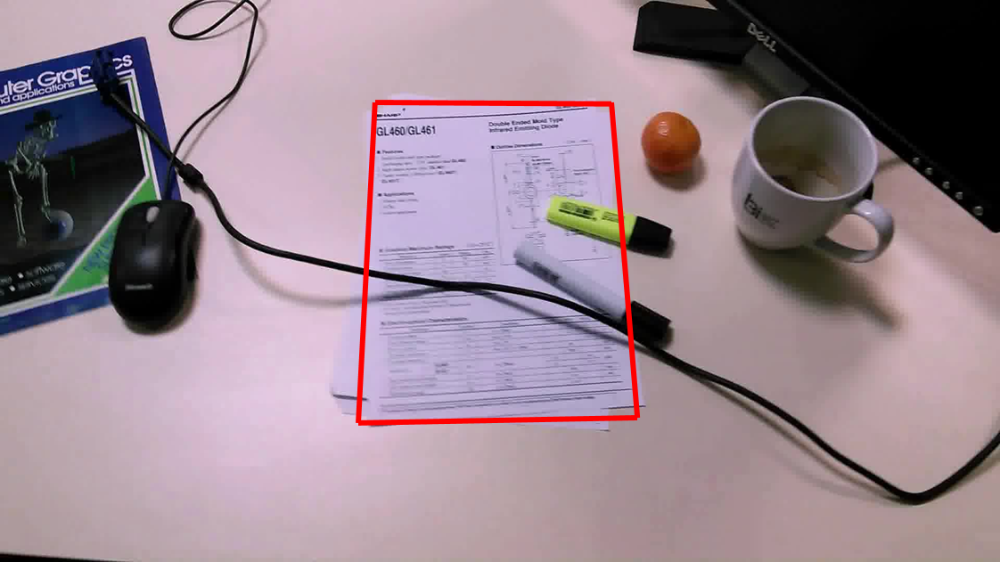

Smartphones are now widely used to digitize
paper documents. Document detection is the first important
step of the digitization process. Whereas many methods extract
lines from contours as candidates for the document boundary,
we present in this paper a region-based approach. A key feature
of our method is that it relies on visual saliency, using a recent
distance existing in mathematical morphology.
With the development of camera devices and social networks, a massive amount
of images are appeared in our daily life activities. It leads to the need for a powerful technique that automatically gets the most useful messages from these images
and filters out unnecessary information in a short time for further processing. This
problem brings us to the idea of visual saliency detection, which is a technique to
simulate the human perception of an image.

It is important to measure the slug risk in order to implement preventive actions. To evaluate the risk on the field, and check for slugs as early as possible, we apply computer vision and machine learning methods to count the number of slugs on a specific area.

License plate recognition is a technology that uses optical character recognition on images to read vehicle registration plates. We employ computer vision and machine learning approaches to segment and recognize the plate as well as the text of the vehicles.